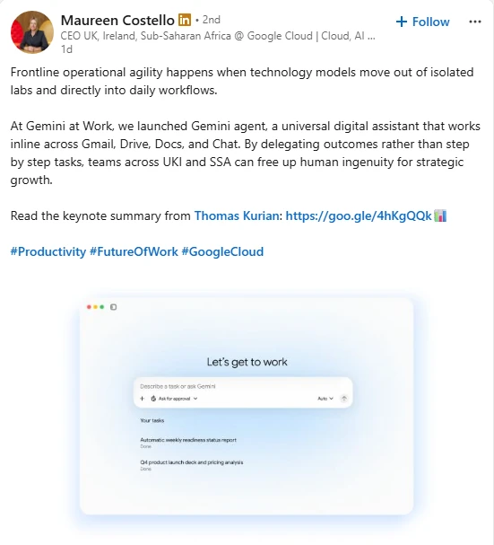
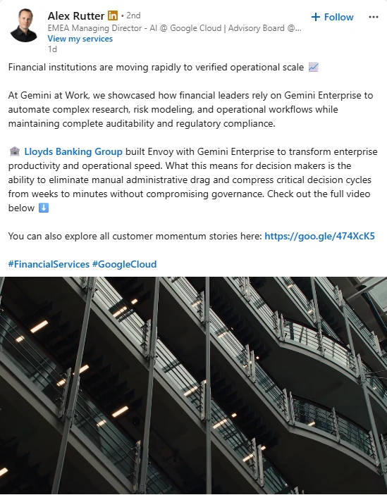
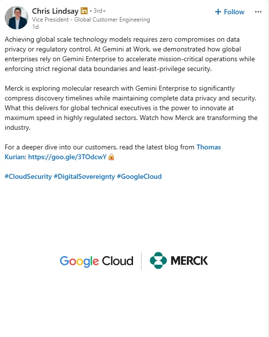
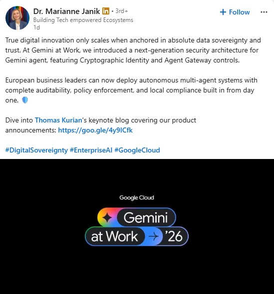
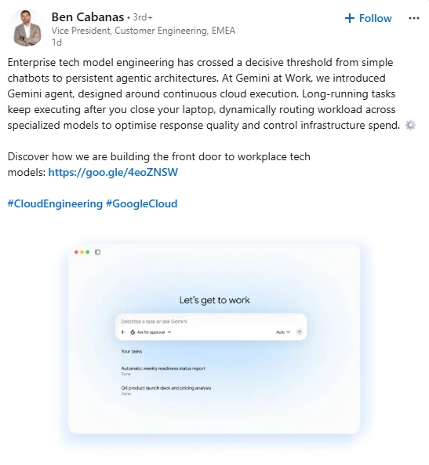

Overview
An always-on programme that gives Google Cloud's senior leaders a consistent, credible presence on LinkedIn, with zero self-briefing for the executives and end-to-end ownership by me.



The challenge
Senior leaders are the most trusted voices a B2B brand has, and the hardest to get publishing. Executive content tends to be sporadic, drift off-message, or sit in a folder approved but never posted.
The measure that matters isn't how many assets get made. It's how many get published, by the right person, at the moment the business needs them.
My role
I lead the Luminary Programme end to end at Jellyfish. That covers programme strategy and editorial planning, executive onboarding and relationship management, voice-of-leader copywriting and creative, governance and permissions in Sprinklr, scheduling and native publishing, and reporting on adoption and performance back to the Google Cloud team.
Day to day, I'm the single point of contact between the executives' teams and the content engine, which is what makes zero self-briefing possible.
Strategic approach
A thought-leadership operating model built for adoption, not output:
- Map the voicesMatch each executive to the themes, products, regions and audiences they can credibly own.
- Plug into the business calendarAlign the editorial plan with product launches, priority company announcements, customer stories, partner milestones, regional news and field and industry events.
- Remove the frictionZero self-briefing: executives receive ready-to-publish posts and creative in their own voice, with nothing to write or brief.
- Publish nativelyPosts go out from executives' own profiles, managed by Jellyfish in Sprinklr with the right permissions, scheduling and milestones.
- Measure adoptionTrack what was published and adopted, not just produced, and refine angles and cadence from the data.


Creative idea
One moment, many credible voices. Around a launch like Gemini at Work '26, each executive takes the angle that fits their remit: productivity for the UK, Ireland and Sub-Saharan Africa CEO, financial services for the EMEA AI lead, engineering, security and digital sovereignty for others. The audience gets five different reasons to care instead of one press release repeated five times.
What I delivered
- Always-on executive content calendar
- Post copy and creative tailored to each executive
- Native publishing on executives' own profiles via Sprinklr
- Coordination with each executive's point of contact
- Amplification of launches, customer stories, partner milestones and regional moments
Results
Programme-level metrics weren't included in the supplied material. The evidence shown is the published work: coordinated posts from five Google Cloud executives around Gemini at Work '26.